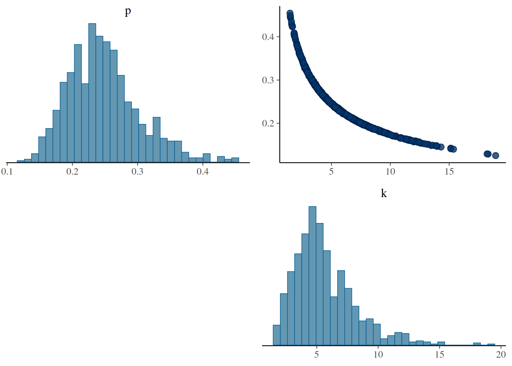
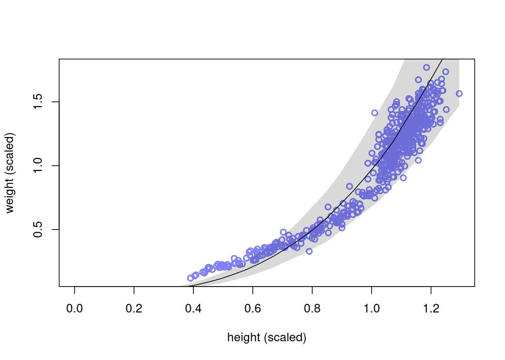
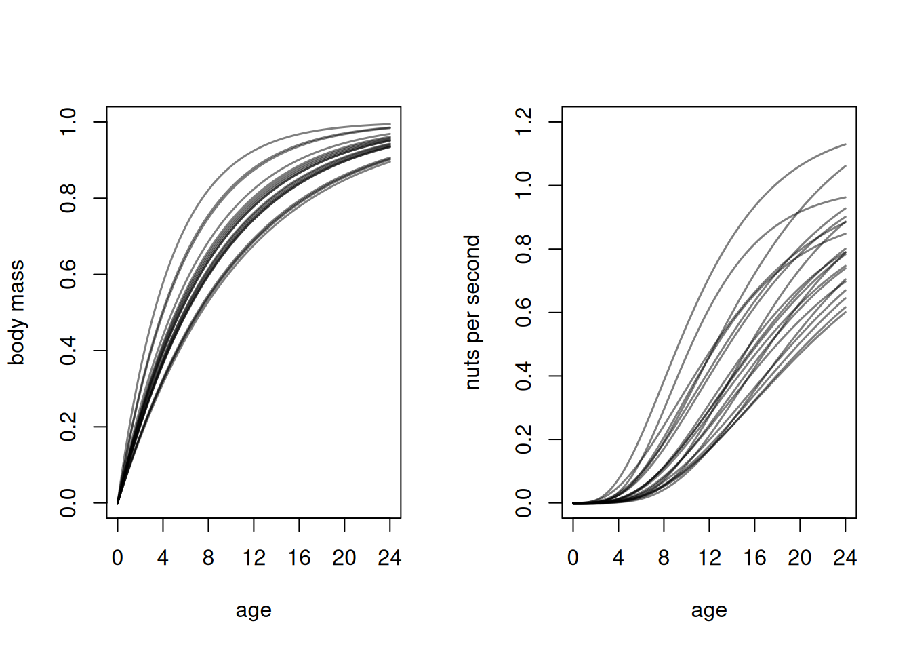
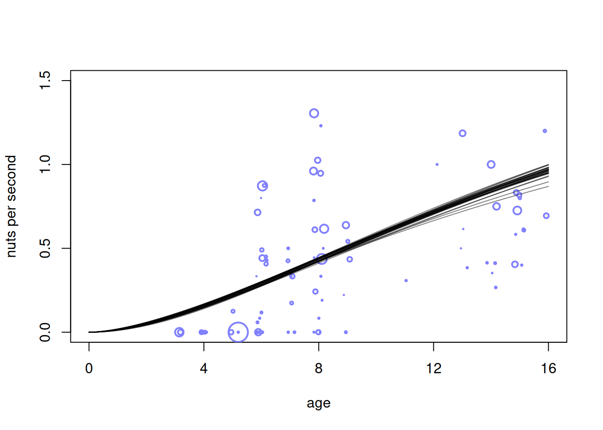
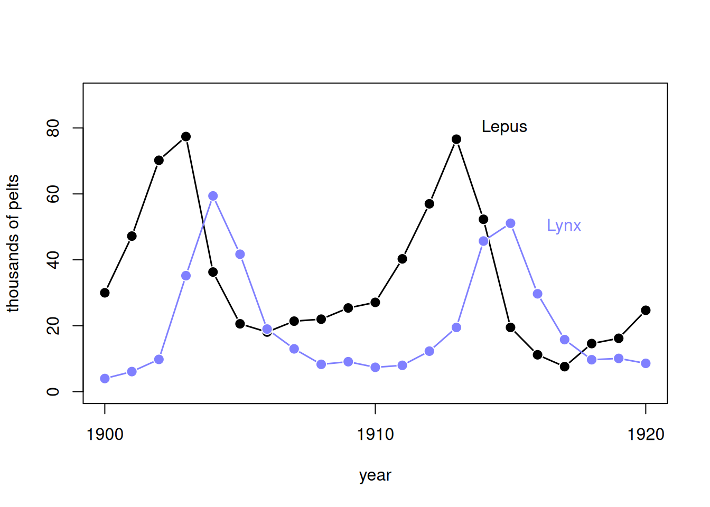
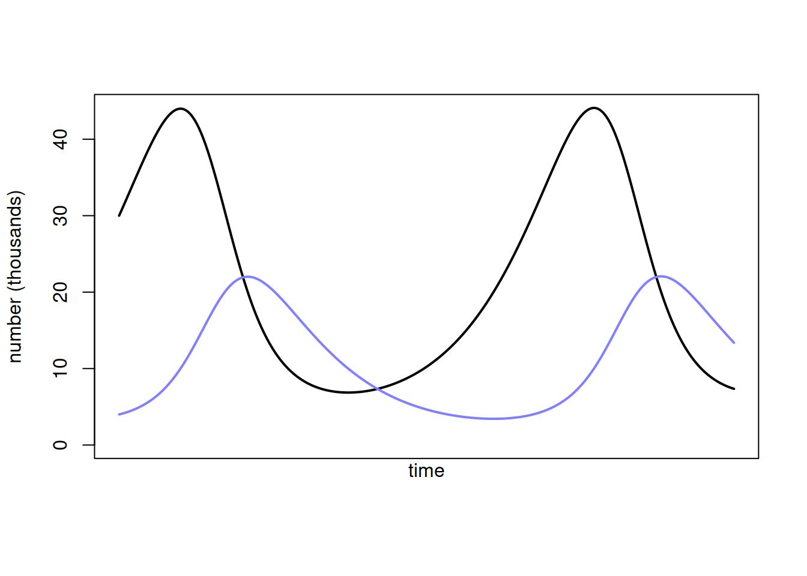
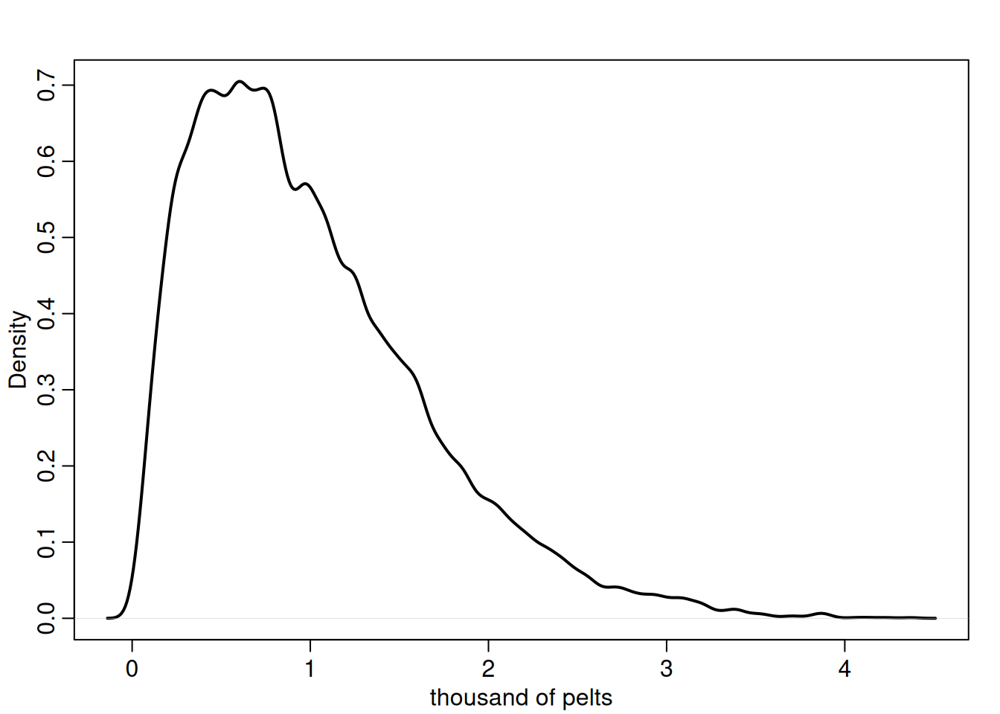
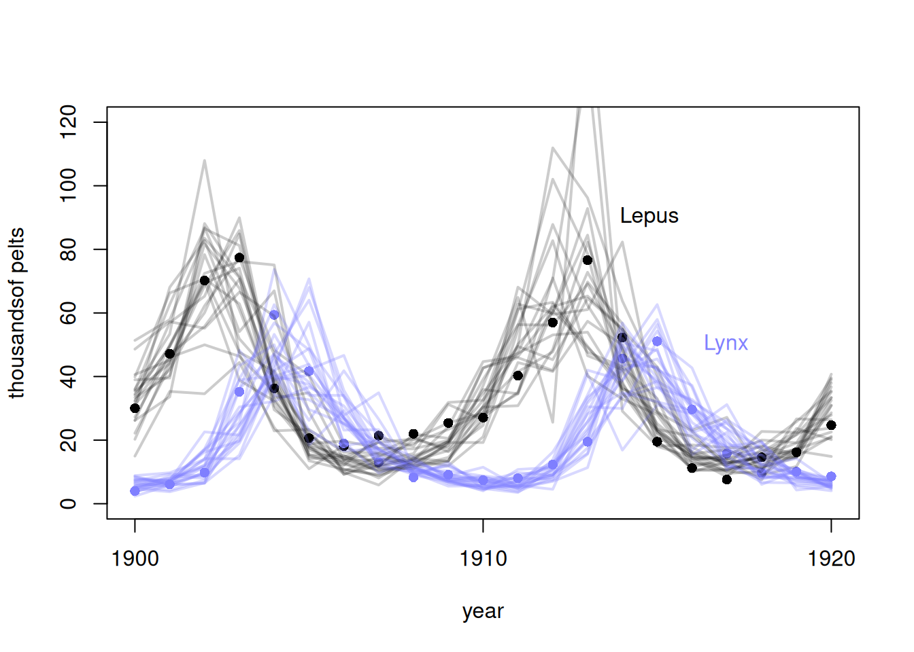
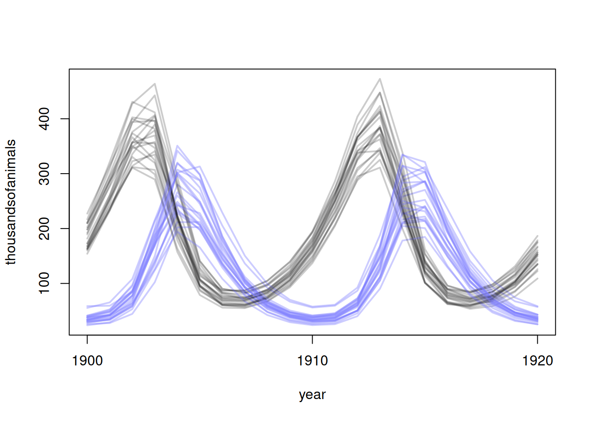

Code
library(rethinking)
library(dagitty)
library(tidyverse)
library(cmdstanr)
# rstudioapi::getActiveDocumentContext()$path |>
# dirname() |>
# setwd()library(rethinking)
library(dagitty)
library(tidyverse)
library(cmdstanr)
# rstudioapi::getActiveDocumentContext()$path |>
# dirname() |>
# setwd()Time to move beyond the limits of simple GLM models and build something that is actually tailored to the problem at hand.
Let’s model the height and weight of persons assuming that people take similar shape of a cylinder: \(V = \pi r^2 h\). We’ll let \(r\) be some proportion of the height such that \(r=ph\). Thus, \(V = \pi p^2 h^3\).
\[ \begin{align} W_i &\sim \operatorname{LogNormal}(\mu_i, \sigma) \\ \exp(\mu_i) &= k\pi p^2 h_i^3 \\ k &\sim \text{some prior} \\ p &\sim \text{some prior} \\ \sigma &\sim \operatorname{Exponential}(1) \end{align} \]
The mean of the lognormal depends on \(\sigma\), so in order to avoid causing issues, we’ll set the median of the distribution at the theoretical average predicted by the cylindrical formula.
Notice that \(k\) and \(p\) are unidentified since they multiply together and therefore are unable to pin down separately. To fix this we can define \(\theta = p k\). But we will still need to think about the priors.
Now let’s think about the priors. For \(p\), it is clear that it must be positive so we don’t have negative width. It should also be less than 1 since people are thinner than they are tall. Finally, we can make the case that \(p\) should be less than 0.5 since that is empirically what we see in the data. A good prior would be \(p \sim \text{Beta}(2,18)\) which puts the average around 0.1.
Now onto \(k\). If we scale our data:
data(Howell1)
d <- Howell1
d$w <- d$weight / mean(d$weight)
d$h <- d$height / mean(d$height)Then for the average: \(1 = k \pi p^2 1^3\) and for \(p < 0.5\), we know \(k\) must be greater than 1. Thus, we’ll use \(k \sim \text{Exponential}(0.5)\).
stan_data <- list(
N = nrow(d),
w = d$w,
h = d$h
)
m16.1 <- cmdstan_model("mod_16.1.stan")
fit16.1 <- m16.1$sample(
data = stan_data,
chains = 4,
parallel_chains = 4,
iter_warmup = 250, iter_sampling = 300,
show_messages = F, show_exceptions = F
)data {
int<lower=1> N;
vector<lower=0>[N] w;
vector<lower=0>[N] h;
}
parameters {
real<lower=0, upper=1> p;
real<lower=0> k;
real<lower=0> sigma;
}
transformed parameters {
vector[N] mu;
mu = log(3.141593 * k * square(p) * pow(h, 3));
}
model {
w ~ lognormal(mu, sigma);
p ~ beta(2, 18);
k ~ exponential(0.5);
sigma ~ exponential(1);
}Let’s take a look at the posteriors:
If you look at the ridge, that is where the two parameters \(k\) and \(p\) produce the same product \(kp^2\). We also see a strong negative correlation since as one increases, the other must decrease to compensate. But this happens quadratically since we have \(p^2\) defining \(\theta\).
fit16.1$draws(c("p", "k"), format = "df") |>
select(-starts_with(".")) |>
sample_n(1e3) |>
bayesplot::mcmc_pairs()Warning: Dropping 'draws_df' class as required metadata was removed.Warning: Only one chain in 'x'. This plot is more useful with multiple chains.
h_seq <- seq(from = 0, to = max(d$h), length.out = 30)
posterior <- fit16.1$draws(c("p", "k", "sigma"), format = "df")
w_sim <- vapply(
h_seq,
function(h) {
rlnorm(
nrow(posterior),
meanlog = log(3.141593 * posterior$k * posterior$p^2 * h^3),
sdlog = posterior$sigma
)
},
numeric(nrow(posterior))
)
mu_mean <- apply(w_sim, 2, mean)
w_CI <- apply(w_sim, 2, PI)
plot(
d$h,
d$w,
xlim = c(0, max(d$h)),
col = rangi2,
lwd = 2,
xlab = "height (scaled)",
ylab = "weight (scaled)"
)
lines(h_seq, mu_mean)
shade(w_CI, h_seq)
It’s worth pointing out that we could have easily taken the log of both sides and this would have become a simple GLM:
\[ \begin{align} \log(w_i) &= \log(k \pi p^2h_i^3) \\ &= \log(k) + \log (\pi) + 2\log(p) + 3\log(h_i) \end{align} \]
Where the intercept absorbs all the terms we were modelling and there is a fixed ‘3’ coefficients on \(\log h_i\).
Let’s talk about the Panda nut; a large nut that chimpanzees use stones to crack open.
data(Panda_nuts)
d <- Panda_nutsWe’ll assume that the limit factor for opening nuts is strenght, which increases with age. For this, we need to think about the weight of the chimp. We assume some simple rate of change where the current rate of increase in mass or proportionate to the distance to its max weight:
\[ \begin{align} \frac{dM}{dt} &= k(M_{\text{max}} - M_t) \\ M_t &= M_{\text{max}} (1 - \exp(-kt)) \end{align} \]
The equation for \(M_t\) (the solution to the differential equation) is a classical one used in biology.
Now, the quantity really of interest is strength. We’ll assume that it is some multiplier on top of weight: \(S_t = \beta M_t\).
To take this one step further, want to understand the rate of nutcracking. We may assume that the relationship is linear (as with the translation between strength and weight), but consider all the actions that come with strength. The relationship might actually be exponential. To model this we let the rate \(\lambda\) be an exponential equation of stregth: \(\lambda = \alpha S_t^\theta\), where we assume \(\theta > 1\).
Now we have:
\[ \lambda = \alpha (\beta M_{\text{max}} (1 - \exp(-kt)))^\theta \]
But we can simplify. If we rescale so that \(M_{\text{max}} = 1\) and let \(\phi = \alpha \beta^\theta\), then \(\lambda = \phi (1 - \exp(-kt))^\theta\).
Now, for the model we will use a Poisson likelihood and multiply our rate equation by some duration \(d_i\) so we can equivalize against chimps that had longer to crack:
\[ \begin{align} n_i &\sim \text{Poisson}(\lambda_i) \\ \lambda_i &= d_i \phi (1 - \exp(-kt))^\theta \\ \phi &\sim \text{Log-Normal}(\log(1), 0.1) \\ k &\sim \text{Log-Normal}(\log(2), 0.25) \\ \theta &\sim \text{Log-Normal}(\log(5), 0.25) \\ \end{align} \]
Let’s look at the implied growth rates:
N <- 1e4
phi <- rlnorm(N, log(1), 0.1)
k <- rlnorm(N, log(2), 0.25)
theta <- rlnorm(N, log(5), 0.25)
par(mfrow = c(1, 2))
# relative grow curve
plot(NULL, xlim = c(0, 1.5), ylim = c(0, 1), xaxt = "n", xlab = "age", ylab = "body mass")
at <- c(0, 0.25, 0.5, 0.75, 1, 1.25, 1.5)
axis(1, at = at, labels = round(at * max(Panda_nuts$age)))
for (i in 1:20) curve((1 - exp(-k[i] * x)), add = TRUE, col = grau(), lwd = 1.5)
# implied rate of nut opening curve
plot(NULL, xlim = c(0, 1.5), ylim = c(0, 1.2), xaxt = "n", xlab = "age", ylab = "nuts per second")
at <- c(0, 0.25, 0.5, 0.75, 1, 1.25, 1.5)
axis(1, at = at, labels = round(at * max(Panda_nuts$age)))
for (i in 1:20) curve(phi[i] * (1 - exp(-k[i] * x))^theta[i], add = TRUE, col = grau(), lwd = 1.5)
Now we can build the model:
dat_list <- list(
N = nrow(d),
n = as.integer(d$nuts_opened),
age = d$age / max(d$age),
seconds = d$seconds
)
m16.3 <- cmdstan_model("mod_16.3.stan")
fit16.3 <- m16.3$sample(
data = dat_list,
chains = 4,
parallel_chains = 4,
iter_warmup = 250, iter_sampling = 300,
show_messages = F, show_exceptions = F
)data {
int<lower=1> N;
array[N] int n;
vector[N] age;
vector[N] seconds;
}
parameters {
real<lower=0> k;
real<lower=0> phi;
real<lower=0> theta;
}
model {
k ~ lognormal(log(1), 0.1);
phi ~ lognormal(log(2), 0.25);
theta ~ lognormal(log(5), 0.25);
vector[N] lam = seconds .* phi .* (1 - exp(-k .* age))^theta;
target += poisson_lpmf(n | lam);
}Now let’s look at the posterior predictive distribution.
par(mfrow = c(1, 1))
post <- fit16.3$draws(format = "df") |> select(-starts_with("."))Warning: Dropping 'draws_df' class as required metadata was removed.plot(NULL, xlim = c(0, 1), ylim = c(0, 1.5), xlab = "age", ylab = "nuts per second", xaxt = "n")
at <- c(0, 0.25, 0.5, 0.75, 1, 1.25, 1.5)
axis(1, at = at, labels = round(at * max(d$age)))
# raw data
pts <- dat_list$n / dat_list$seconds
point_size <- normalize(dat_list$seconds)
points(jitter(dat_list$age), pts, col = rangi2, lwd = 2, cex = point_size * 3)
# 30 posterior curves
for (i in 1:30) {
with(
post,
curve(phi[i] * (1 - exp(-k[i] * x))^theta[i], add = TRUE, col = grau())
)
}
One thing to note is that we could have used individual specific parameters where they make sense. But \(\theta\) makes sense to remain global as it is a governing property of physics and not something that can change by chimp.
We’ll study here the population times series for lynx and hares:
data(Lynx_Hare)
plot(1:21, Lynx_Hare[, 3],
ylim = c(0, 90), xlab = "year",
ylab = "thousands of pelts", xaxt = "n", type = "l", lwd = 1.5
)
at <- c(1, 11, 21)
axis(1, at = at, labels = Lynx_Hare$Year[at])
lines(1:21, Lynx_Hare[, 2], lwd = 1.5, col = rangi2)
points(1:21, Lynx_Hare[, 3], bg = "black", col = "white", pch = 21, cex = 1.4)
points(1:21, Lynx_Hare[, 2], bg = rangi2, col = "white", pch = 21, cex = 1.4)
text(17, 80, "Lepus", pos = 2)
text(19, 50, "Lynx", pos = 2, col = rangi2)
This is actually a model of the number of pelts, not the actual animals.
A simple model would be an autoregressive one. Something like:
\[ E(H_t) = \alpha + \beta_1 H_{t-1} \]
Where \(H_t\) is the number of hares at time \(t\).
We can do better than this though. We’ll set up a simple ODE:
\[ \frac{dH}{dt} = H_t \times b_H - H_t \times m_H \]
Where \(b_H\) and \(m_H\) are the birth and death rate of hares, respectively. We can also make the assumption that the number of lynxs present impact the per capita rate (\(b_H - m_H\)) via multiplication into the death rate:
\[ \frac{dH}{dt} = H_t (b_H - L_t m_H) \]
A ODE can be made for the Lynx rate of change, except we multiply the birth rate of the lynx by the current hare population. Let’s go ahead a simulate this model:
sim_lynx_hare <- function(n_steps, init, theta, dt = 0.002) {
L <- rep(NA, n_steps)
H <- rep(NA, n_steps)
L[1] <- init[1]
H[1] <- init[2]
for (i in 2:n_steps) {
H[i] <- H[i - 1] + dt * H[i - 1] * (theta[1] - theta[2] * L[i - 1])
L[i] <- L[i - 1] + dt * L[i - 1] * (theta[3] * H[i - 1] - theta[4])
}
return(cbind(L, H))
}
theta <- c(0.5, 0.05, 0.025, 0.5)
z <- sim_lynx_hare(1e4, as.numeric(Lynx_Hare[1, 2:3]), theta)
plot(z[, 2],
type = "l", ylim = c(0, max(z[, 2])), lwd = 2, xaxt = "n",
ylab = "number (thousands)", xlab = ""
)
lines(z[, 1], col = rangi2, lwd = 2)
mtext("time", 1)
One concept we need to introduce is the latent and observeed state. We’ll say that \(h_t\) is what we actualy observe from the pelts, but \(H_t\) is the latent state for the actual hare population. We’ll also say that there is some trap rate \(p\) that is applied to the hare population. Let’s use a \(\text{Beta}(2,18)\) distribution for \(p\) so that we are centered around 10% trapping rate. Let’s simulate to see if it makes sense:
N <- 1e4
Ht <- 1e4
p <- rbeta(N, 2, 18)
h <- rbinom(N, size = Ht, prob = p)
h <- round(h / 1000, 2)
dens(h, xlab = "thousand of pelts", lwd = 2)
Looks reasonable, with a long tail. We’ll use a lognormal distribution to model the observed pelts:
\[ h_t \sim \text{Log-Normal}(\log(p H_t), \sigma_H) \]
This sets our median at \(p H_t\). Note that \(p\) is very hard to identify here. So instead we will just use a strong prior. Now we’re ready to write the model:
\[ \begin{align} h_t &\sim \operatorname{LogNormal}\left(\log(p_H H_t), \sigma_H\right) \\ \ell_t &\sim \operatorname{LogNormal}\left(\log(p_L L_t), \sigma_L\right) \end{align} \]
Now we need to model the actual unobserved states:
\[ \begin{align} H_1 &\sim \operatorname{LogNormal}(\log 10, 1) \\ L_1 &\sim \operatorname{LogNormal}(\log 10, 1) \\ H_{T>1} &= H_1 + \int_1^T H_t \left(b_H - m_H L_t\right)\,dt \\ L_{T>1} &= L_1 + \int_1^T L_t \left(b_L H_t - m_L\right)\,dt \end{align} \]
Note that we set a prior on the inital state. The integration is how we back out the rate formula shown before. Finally, we have our parameter priors:
\[ \begin{align} \sigma_H &\sim \operatorname{Exponential}(1) \\ \sigma_L &\sim \operatorname{Exponential}(1) \\ p_H &\sim \operatorname{Beta}(\alpha_H, \beta_H) \\ p_L &\sim \operatorname{Beta}(\alpha_L, \beta_L) \\ b_H &\sim \operatorname{HalfNormal}(1, 0.5) \\ b_L &\sim \operatorname{HalfNormal}(0.05, 0.05) \\ m_H &\sim \operatorname{HalfNormal}(0.05, 0.05) \\ m_L &\sim \operatorname{HalfNormal}(1, 0.5) \end{align} \]
Now we can fit our model!
dat_list <- list(
N = nrow(Lynx_Hare),
pelts = Lynx_Hare[, 2:3]
)
m16.4 <- cmdstan_model("mod_16.4.stan")
fit16.4 <- m16.4$sample(
data = dat_list,
chains = 4,
parallel_chains = 4,
iter_warmup = 800, iter_sampling = 800, adapt_delta = 0.99,
show_messages = F, show_exceptions = F
)functions {
vector population_dynamics(real t, vector pop, array[] real theta,
array[] real x_r, array[] int x_i) {
vector[2] dpop_dt;
real L = pop[1];
real H = pop[2];
real b_H = theta[1];
real m_H = theta[2];
real m_L = theta[3];
real b_L = theta[4];
dpop_dt[1] = (b_L * H - m_L) * L;
dpop_dt[2] = (b_H - m_H * L) * H;
return dpop_dt;
}
}
data {
int<lower=1> N;
array[N, 2] real<lower=0> pelts;
}
transformed data {
array[N - 1] real times_measured;
for (i in 1 : (N - 1)) {
times_measured[i] = i + 1;
}
}
parameters {
real<lower=0> b_H;
real<lower=0> b_L;
real<lower=0> m_H;
real<lower=0> m_L;
vector<lower=0>[2] pop_init;
vector<lower=0>[2] sigma;
vector<lower=0, upper=1>[2] p;
}
transformed parameters {
array[N] vector[2] pop;
array[N - 1] vector[2] pop_ode;
array[4] real theta = {b_H, m_H, m_L, b_L};
pop[1] = pop_init;
if (N > 1) {
pop_ode = ode_rk45_tol(population_dynamics, pop_init, 1.0,
times_measured, 1e-5, 1e-3, 100000, theta,
rep_array(0.0, 0), rep_array(0, 0));
for (i in 2 : N) {
pop[i] = pop_ode[i - 1];
}
}
}
model {
b_H ~ normal(1, 0.5);
b_L ~ normal(0.05, 0.05);
m_H ~ normal(0.05, 0.05);
m_L ~ normal(1, 0.5);
pop_init ~ lognormal(log(10), 1);
sigma ~ exponential(1);
p ~ beta(40, 200);
for (t in 1 : N) {
for (k in 1 : 2) {
pelts[t, k] ~ lognormal(log(pop[t][k] * p[k]), sigma[k]);
}
}
}
generated quantities {
array[N, 2] real pelts_pred;
for (t in 1 : N) {
for (k in 1 : 2) {
pelts_pred[t, k] = lognormal_rng(log(pop[t][k] * p[k]), sigma[k]);
}
}
}Now let’s look at the posterior predictive:
hare <- fit16.4$draws(format = "df") |>
select(starts_with("pelts_pred")) |>
select(ends_with("2]"))Warning: Dropping 'draws_df' class as required metadata was removed.lynx <- fit16.4$draws(format = "df") |>
select(starts_with("pelts_pred")) |>
select(ends_with("1]"))Warning: Dropping 'draws_df' class as required metadata was removed.pelts <- dat_list$pelts
plot(1:21, pelts[, 2],
pch = 16, ylim = c(0, 120), xlab = "year",
ylab = "thousandsof pelts", xaxt = "n"
)
at <- c(1, 11, 21)
axis(1, at = at, labels = Lynx_Hare$Year[at])
points(1:21, pelts[, 1], col = rangi2, pch = 16)
# 21 timeseries from posterior
for (s in 1:21) {
lines(1:21, hare[s, ], col = col.alpha("black", 0.2), lwd = 2)
lines(1:21, lynx[s, ], col = col.alpha(rangi2, 0.3), lwd = 2)
}
# text labels
text(17, 90, "Lepus", pos = 2)
text(19, 50, "Lynx", pos = 2, col = rangi2)
We are see jagged lines since the measurement error (\(\sigma_H\)) is uncorrelated across time. We can also plot the latent trend too:
hare_pop <- fit16.4$draws(format = "df") |>
select(starts_with("pop[")) |>
select(ends_with("2]"))Warning: Dropping 'draws_df' class as required metadata was removed.lynx_pop <- fit16.4$draws(format = "df") |>
select(starts_with("pop[")) |>
select(ends_with("1]"))Warning: Dropping 'draws_df' class as required metadata was removed.plot(NULL,
pch = 16, xlim = c(1, 21), ylim = range(hare_pop[1:21, ], lynx_pop[1:21, ]), xlab = "year",
ylab = "thousandsofanimals", xaxt = "n"
)
at <- c(1, 11, 21)
axis(1, at = at, labels = Lynx_Hare$Year[at])
for (s in 1:21) {
lines(1:21, hare_pop[s, ], col = col.alpha("black", 0.2), lwd = 2)
lines(1:21, lynx_pop[s, ], col = col.alpha(rangi2, 0.4), lwd = 2)
}